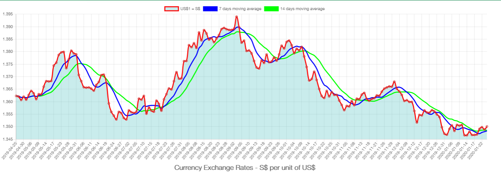

ABOUT
What is Forex?
The foreign exchange market (Forex, FX, or currency market) is a global decentralized or over-the-counter (OTC) market for the trading of currencies. This market determines foreign exchange rates for every currency. It includes all aspects of buying, selling and exchanging currencies at current or determined prices.
(Source: Wikipedia - https://en.wikipedia.org/wiki/Foreign_exchange_market)
Backtesting
Backtesting is jargon used in financial industries to refer to testing a trading strategy or predictive model using existing historic data.
Backtesting can be considered a type of cross-validation applied to time series data. Backtesting seeks to estimate the performance of a strategy if it had been employed during a past period.
This requires simulating past conditions with sufficient detail, making one limitation of backtesting the need for detailed historical data.
(Source: Definitions.Net - https://www.definitions.net/definition/backtesting
Moving Average Strategy
The moving average is one of the most widely used technical analysis tools out there. Moving averages basically calculate the average price of a certain number of periods in a given time frame to smooth out the price action and helps traders get a proper visual representation of the overall directional movement of an asset. In Forex trading, moving averages are mainly used to generate trading signals. But the larger period moving averages such as 50 and 200 Simple Moving Averages (SMAs) are also used to gauge potential support and resistance.
Five of the common moving average strategies:
- #1 Moving Average Crossover
- #2 Moving Average Pullbacks
- #3 Moving Average Trend Trading
- #4 Moving Average Stop Loss
- #5 Moving Average Take Profit
(Source: Tradeciety - https://www.tradeciety.com/moving-average-strategy-guide-5-moving-average-strategies/)